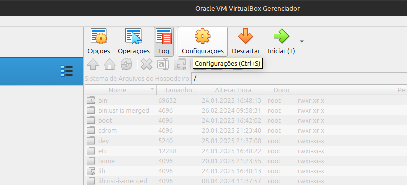
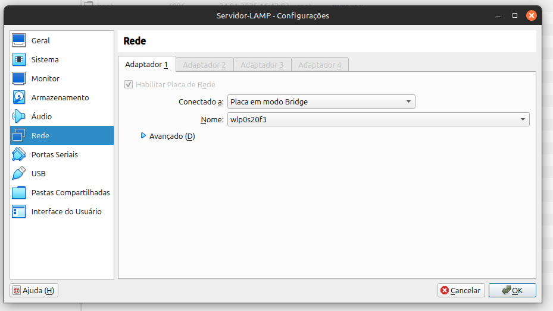
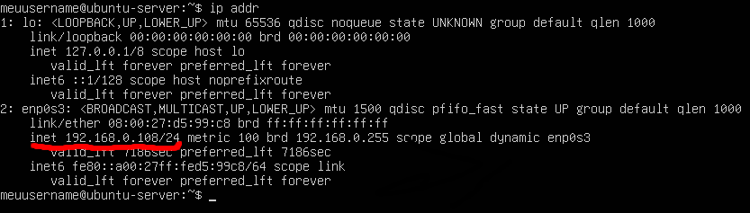
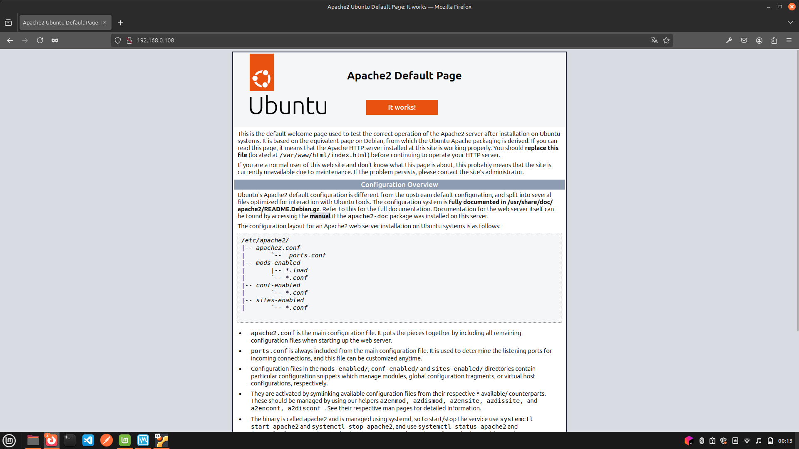

Sobre o LAMP
LAMP é um conjunto de tecnologias de código aberto composto por Linux, Apache, MySQL e PHP/Perl/Python, amplamente utilizado no desenvolvimento, hospedagem e manutenção de aplicações web, tanto pela sua robustez, quanto pela sua gratuidade e facilidade de acesso.

Linux
Sistema operacional que proporciona a base segura e estável para a operação das outras ferramentas.
Apache
Servidor web que processa as requisições e fornece conteúdo aos usuários.
MySQL
Sistema de gerenciamento de banco de dados responsável pelo armazenamento e controle de dados da aplicação.
PHP/Perl/Python
Linguagens de programação usadas em projetos web, permitindo a criação de páginas interativas e conectadas ao MySQL.
Prós
- Instalação e configuração descomplicada
- Ferramentas bem estabelecidas no mundo da tecnologia
- Segurança, estabilidade e acessibilidade
- Flexibilidade por serem open-source
- Permitem diversas adaptações
- Modularidade do Apache possibilita maior customização
Contras
- Performance do Apache em projetos grandes com muitas requisições
Derivados do LAMP
- WAMP — substituindo o Linux por Windows
- XAMPP — multiplataforma, com uso de Perl e PHP
Implementação
Neste tutorial, você aprenderá a implementar uma aplicação web com o servidor Apache, em uma máquina virtual Ubuntu Server, seguindo um passo-a-passo de instalação de todos os seus componentes.
Configuração da rede da máquina virtual
Para permitir que a máquina virtual obtenha um IP da mesma rede do computador, siga os passos abaixo:
- Altere a configuração de rede padrão NAT para Bridge. Dessa forma, a máquina virtual se comportará como um dispositivo real na rede, recebendo um IP dentro da mesma faixa do roteador.
-
Acesse as configurações da máquina virtual, na opção de configuração
localizada entre as opções de descartar e log.

-
Na aba de rede, troque a configuração do adaptador para Placa em
modo Bridge.

Instalação do servidor web
Para instalar as ferramentas LAMP, siga os passos abaixo:
- Atualize os pacotes do Ubuntu com os seguintes comandos:
- Instale o pacote LAMP com o comando:
- Execute o comando abaixo para obter o endereço IP da máquina:
-
Procure pelo endereço
inetda máquina, que será utilizado para acessar o servidor a partir de outros dispositivos na rede. - Abra esse endereço em um navegador de outro dispositivo na rede. A exibição da página padrão do Apache indicará que a instalação do servidor Apache foi concluída com sucesso.
sudo apt updatesudo apt upgradesudo apt install lamp-server^ip addr

Editando o conteúdo da página web
Para editar o conteúdo da página web do servidor, siga os passos abaixo:
- Altere para a raiz do sistema:
- Acesse a pasta
html: -
Clone o repositório desejado usando o comando abaixo, substituindo
<URL>pela URL HTTP do projeto: -
Apague o arquivo
index.htmlpadrão encontrado na pastahtmlcom o comando: -
Mova todos os arquivos dentro da pasta do projeto importado para
fora, substituindo
[projeto]pelo nome da pasta do projeto clonado: - Acesse a página usando o IP da máquina virtual e verifique a mudança do conteúdo da página.
cd /cd var/www/htmlsudo git clone <URL>sudo rm -rf index.htmlsudo mv [projeto]/* ./Referências
- UBUNTU. Get started with LAMP applications. Disponível em: https://ubuntu.com/server/docs/get-started-with-lamp-applications. Acesso em: 26/01/2025.
- APACHE. Getting Started. Disponível em: https://httpd.apache.org/docs/2.4/getting-started.html. Acesso em: 26/01/2025.
- GITHUB. Cloning a Repository. Disponível em: https://docs.github.com/en/repositories/creating-and-managing-repositories/cloning-a-repository. Acesso em: 26/01/2025.